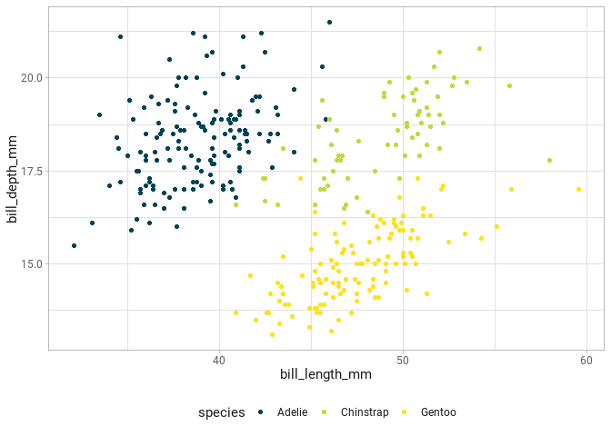

My personal R library
The goal of benelib is to make my life considerably easier. This package includes various helper functions for ggplot2 plots, RStudio projects or R Markdown templates and a few things more.
Installation
You can install and loaded the released version of benelib from GitHub with:
# install.packages("devtools")
devtools::install_github("benediktclaus/benelib")
library(benelib)Examples
ggplot2 Colors and Fills
One of the main reasons for this package to exist is the ability to change ggplot2’s default color and fill scales to a given corporate design.
library(ggplot2)
use_personal_theme()
palmer_penguins %>%
ggplot(aes(bill_length_mm, bill_depth_mm, color = species)) +
geom_point()